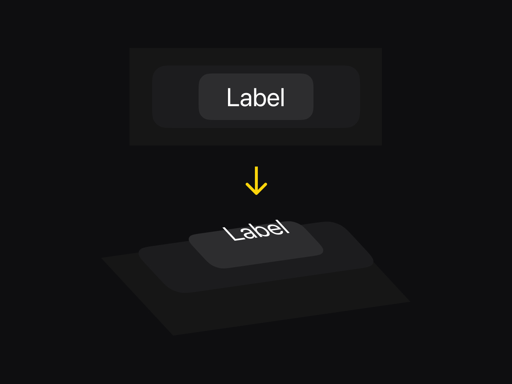
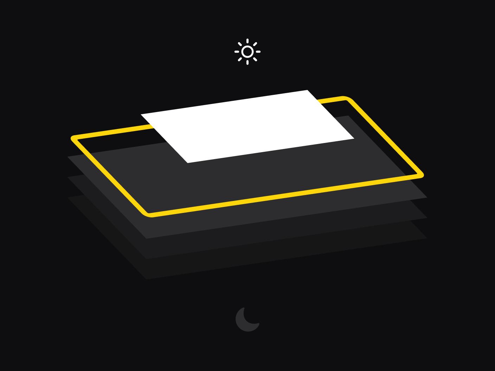
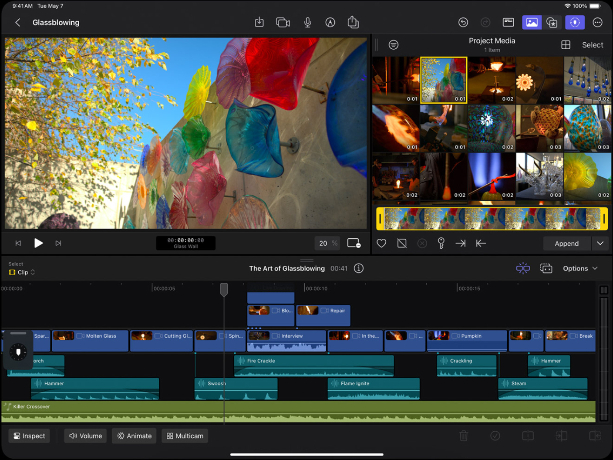
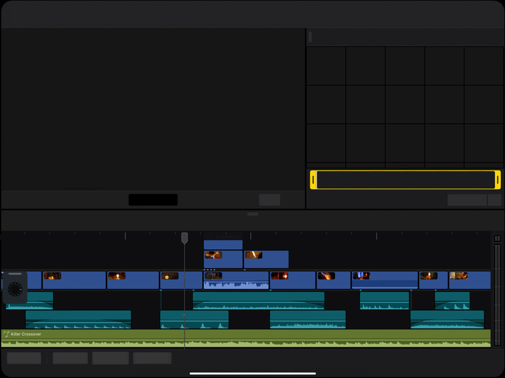
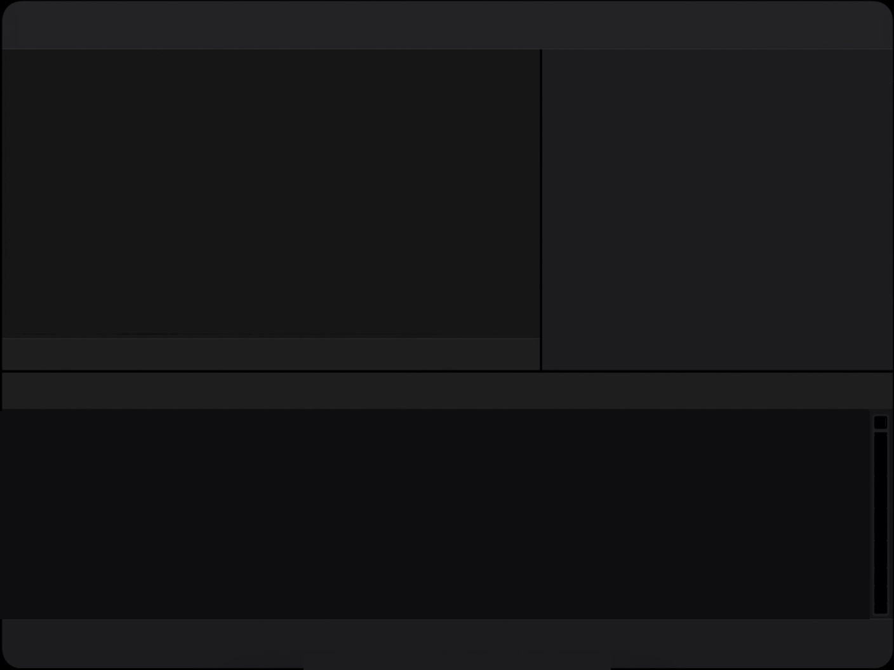

Dark UI Depth – The Hidden Hierarchy
Introduction
When working with dark UI and custom colors, you need to think about how the content will appear on the screen, not only from top to bottom, but also from far to near.
Every button, every view you have has a different sense of distance to the viewer.
Darker, or objects that appear in a shadow or semi-transparent usually feels far away from the viewer. White and contrasted with the background feels closer to the viewer.

As in nature, shadows move to the background and objects closer to light move to the foreground. It creates elevation and space in the UI.

If you’re building a dark UI with custom colors, it’s easy to get lost in such a hierarchy. To fix this, you can do this simple trick. Simply remove all labels and icons from each button. Just take a screenshot of your design and cover up all the labels.

Now you can see the structure better. Think about what you want users to notice first, what are the core elements of your app UI?

If you have multiple layers of surfaces, you can remove another layer to check the structure of the foundation. The skeleton. Make sure the foundation is simple and easy to scan. Don’t overcomplicate it.

If you have a noisy, chaotic structure, your foundation is not well done and should be improved, because users will feel it, they will scan it, and it takes more cognitive energy to do that.